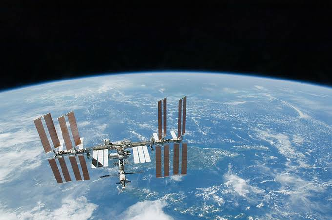

APOD Search Support
Email: apodsearch@example.com
For this prototype, contact information is included as sample project content. The main purpose of the page is to keep the navigation complete and consistent with the original wireframe.
This page provides simple project contact information for the APOD Search prototype.
APOD Search was created as a capstone prototype for a web development assignment. The project uses NASA's public APOD API to display astronomy images by date.

Email: apodsearch@example.com
For this prototype, contact information is included as sample project content. The main purpose of the page is to keep the navigation complete and consistent with the original wireframe.
Official NASA API page for developers and students.
NASA's archive of Astronomy Picture of the Day images.
Saved APOD images can be viewed from the homepage favourites section.